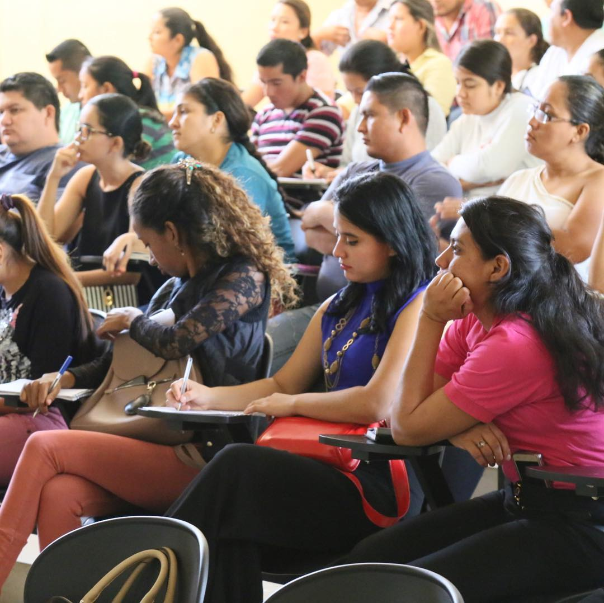
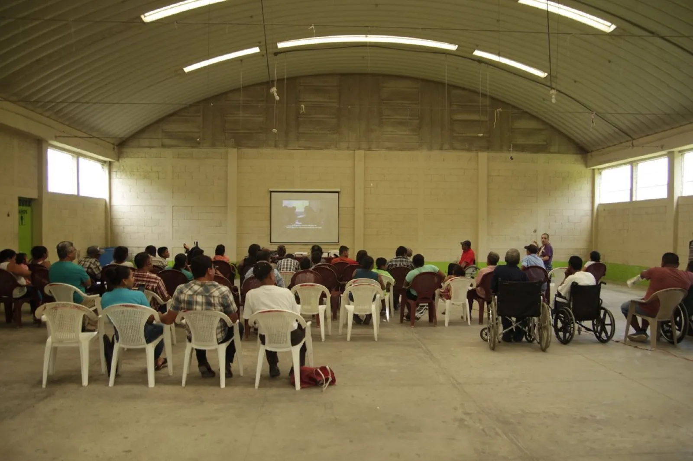

Trained teachers
With CUDEP-USAC, we run a series of ten conversations on assessment, mixed-level classes, cooperative learning, and computational thinking, with Scholas Occurrentes and Hospitalidad Digital.
We support teachers, students and communities in Petén, Guatemala. Your donation keeps this work going.

Why education
In Petén, education opens paths that too often remain closed. We work alongside people who teach, study, and cultivate the land.
Education is the one ingredient that can start sustainable development.
With CUDEP-USAC, we run a series of ten conversations on assessment, mixed-level classes, cooperative learning, and computational thinking, with Scholas Occurrentes and Hospitalidad Digital.
We bring climate education into classrooms for young people aged 13 to 17, starting from what they see every day in their own area.
Agricultural training shares practical knowledge for daily work and caring for the land.

It was 2018. A group of young Italians and Guatemalans sitting around a table asked: what do communities in Petén really lack? The answer was as simple as it was difficult: quality education, practical tools, and connection with the world.
Comparte grew out of that lunch — a Spanish name that means share. Today, we work in Guatemala on university training, environmental education, and rural community development.
"We believe education is the one ingredient that can start sustainable development."

From 2018 to 2020, we brought Spanish-language film screenings to seven rural communities in Petén, in collaboration with the Cuban ICAIC. Those evenings are where Comparte began: a practical way to share culture where little reached before. Everything else started there.
Board
Andrea Pesce · President · Co-founder of Comparte and CEO of zeroCO2.
Irene Culcasi · Vice President · Education researcher focused on service-learning.
Virgilio Galicia Gregorio · Guatemala liaison · Liaison with indigenous communities in Petén.
In rural communities in Petén where zeroCO2 plants trees, we provide agricultural training. We talk about land, crops, and practices that stay useful every day.
Online seminars with European instructors for CUDEP students and teachers, at the most isolated center of Guatemala's public university. Since 2018, 1,500 people have been trained.
A five-module program on the climate crisis for young people aged 13–17 in rural communities. The first edition involved 27 students in Nuevo Horizonte, with INAB and MARN.
The Italian 5×1000 lets taxpayers direct part of their income tax to Comparte at no extra cost.
If you file taxes in Italy, use our tax code. If not, you can still donate by bank transfer.
Banca Etica
IT27J0501803200000016738783
Payable to: Comparte
Suggested reference: Donation.
Want to donate every month? Set up a recurring bank transfer with these details.
Card donations are coming through Mollie, a European provider. For now, you can use a bank transfer.
Keep your bank transfer receipt. Tax treatment depends on the rules that apply where you file taxes.
The 5×1000 is an Italian tax allocation. If you pay taxes in Italy, you can direct it to Comparte with tax code 97977810585 at no extra cost.
Comparte has worked in Petén, Guatemala since 2018. We train teachers and students, bring climate education to schools, and support agricultural training in rural communities.
Yes. You can make a bank transfer to Banca Etica, IBAN IT27J0501803200000016738783, payable to Comparte. Keep your receipt.
Not yet. Card donations will be available through Mollie, a European provider. Your card details will never pass through our website. For now, you can use a bank transfer.
Donations support three active projects in Petén: training grants for USAC students, a climate education program in Nuevo Horizonte, and agricultural activities with farming communities. We publish an annual report in the Transparency section.
Yes. Andrea Pesce co-founded both organizations. zeroCO2 plants trees in rural communities in Petén; Comparte brings agricultural training and access to education to those same communities. The organizations are independent and collaborate in the field.